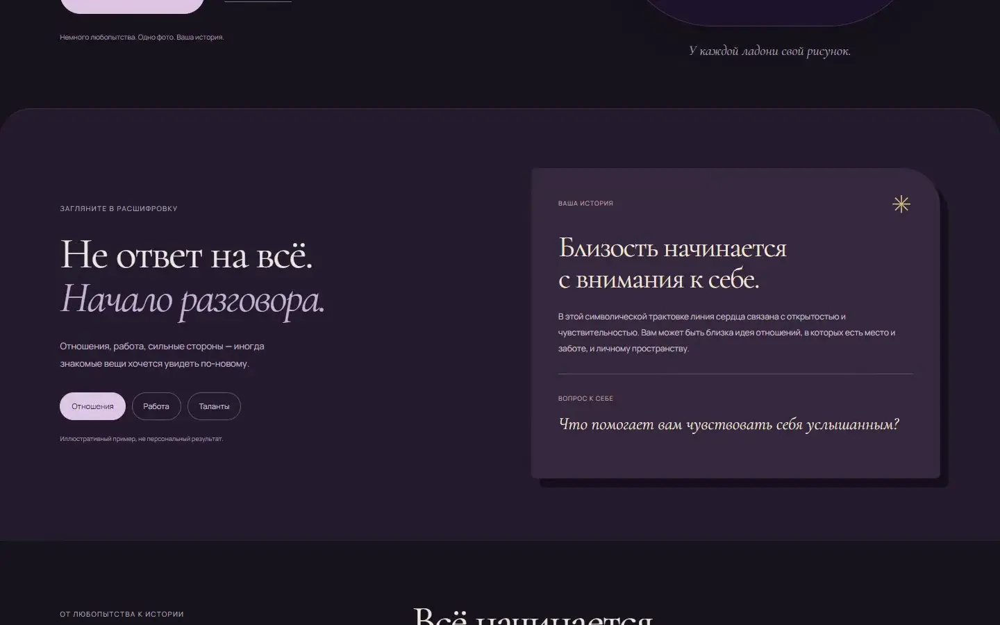
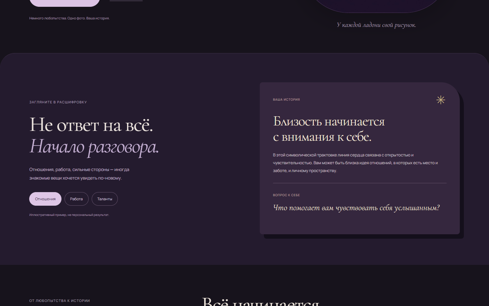
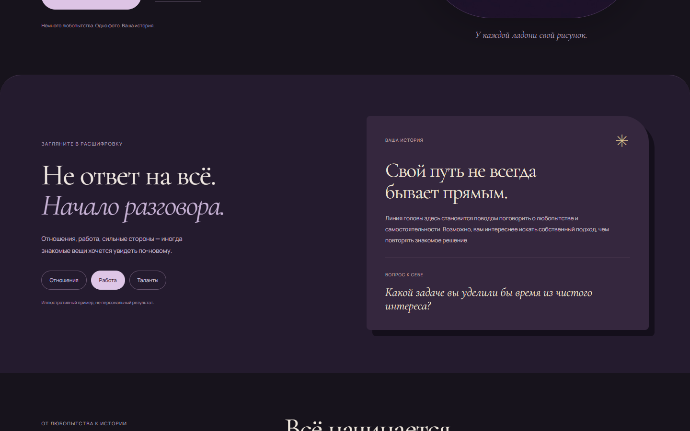
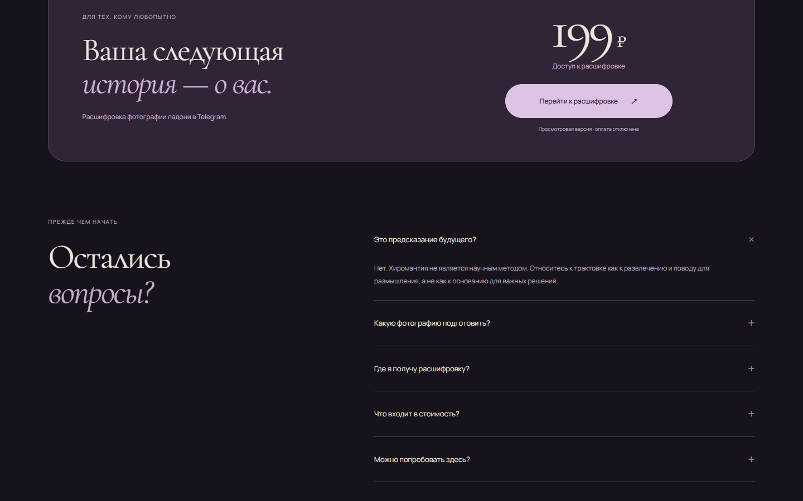

Подготовить ладонь
Инструкция объясняет свет, ракурс и кадр без загрузки данных в сайте.

PALM READING · TELEGRAM LANDING
Тёмный редакционный лендинг объясняет формат разбора ладони и ведёт к Telegram-сценарию.
Не предсказание будущего.
Повод начать разговор с собой.


Инструкция объясняет свет, ракурс и кадр без загрузки данных в сайте.
Отношения, работа или сильные стороны меняют пример ответа.
Лендинг объясняет стоимость и ведёт к следующему шагу оформления.

Project / Overview
Пользователю нужно понять услугу и следующий шаг до перехода к боту.
Собрал сайт с направлениями, тарифами, FAQ и интерфейсом заказа.
Посетитель выбирает формат обращения и переходит к предусмотренному сценарию оформления.
Предложение, варианты услуги и путь оформления понятны до перехода к боту.
Есть задача?